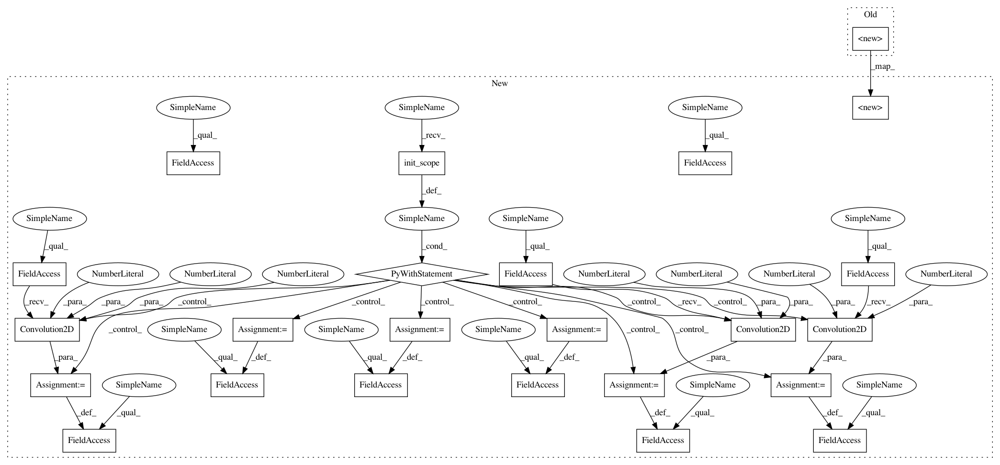

b8110fb98da2a48a2c4fd6b2607950f6cafc56e9,lib/srcnn.py,ResNet10,__init__,#ResNet10#Any#,92
Before Change
self.ch = ch
self.offset = 13
self.inner_scale = 1
super(ResNet10, self).__init__(
conv_fe=L.Convolution2D(ch, 64, 3),
res1=ResBlock(64, 64),
res2=ResBlock(64, 64),
res3=ResBlock(64, 64),
res4=ResBlock(64, 64),
res5=ResBlock(64, 64),
conv6=L.Convolution2D(64, 64, 3),
conv_be=L.Convolution2D(64, ch, 3),
)
def __call__(self, x):
h = skip = F.leaky_relu(self.conv_fe(x), 0.1)
h = self.res1(h)
After Change
def __init__(self, ch):
super(ResNet10, self).__init__()
with self.init_scope():
self.conv_pre = L.Convolution2D(ch, 64, 3)
self.res1 = ResBlock(64, 64)
self.res2 = ResBlock(64, 64)
self.res3 = ResBlock(64, 64)
self.res4 = ResBlock(64, 64)
self.res5 = ResBlock(64, 64)
self.conv_bridge = L.Convolution2D(64, 64, 3)
self.conv_post = L.Convolution2D(64, ch, 3)
self.ch = ch
self.offset = 13
self.inner_scale = 1
In pattern: SUPERPATTERN
Frequency: 3
Non-data size: 24
Instances
Project Name: tsurumeso/waifu2x-chainer
Commit Name: b8110fb98da2a48a2c4fd6b2607950f6cafc56e9
Time: 2018-05-01
Author: tsurumeso@gmail.com
File Name: lib/srcnn.py
Class Name: ResNet10
Method Name: __init__
Project Name: tsurumeso/waifu2x-chainer
Commit Name: b8110fb98da2a48a2c4fd6b2607950f6cafc56e9
Time: 2018-05-01
Author: tsurumeso@gmail.com
File Name: lib/srcnn.py
Class Name: ResNet10
Method Name: __init__
Project Name: tsurumeso/waifu2x-chainer
Commit Name: b8110fb98da2a48a2c4fd6b2607950f6cafc56e9
Time: 2018-05-01
Author: tsurumeso@gmail.com
File Name: lib/srcnn.py
Class Name: VGG7
Method Name: __init__
Project Name: tsurumeso/waifu2x-chainer
Commit Name: b8110fb98da2a48a2c4fd6b2607950f6cafc56e9
Time: 2018-05-01
Author: tsurumeso@gmail.com
File Name: lib/srcnn.py
Class Name: UpConv7
Method Name: __init__